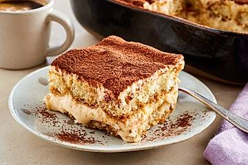

Tiramisu

Description
Tiramisu is a classic Italian dessert that layers coffee-soaked ladyfingers with a luscious mascarpone cream and a dusting of cocoa powder. Its name, which means "pick me up," reflects the invigorating combination of coffee and indulgent sweetness. This no-bake dessert is elegant yet simple, making it perfect for special occasions or an everyday treat.
Ingredients
- For the Coffee Mixture:
- 1 ½ cups strong espresso or coffee, cooled
- 2 tbsp coffee liqueur (optional)
- For the Cream:
- 3 large egg yolks
- ½ cup granulated sugar
- 1 tsp vanilla extract
- 250g mascarpone cheese, softened
- ¾ cup heavy cream, whipped to soft peaks
- For Assembly:
- 24-30 ladyfinger biscuits (savoiardi)
- Unsweetened cocoa powder for dusting
- Dark chocolate shavings (optional)
Steps
- Prepare the Coffee Mixture:
- Brew strong espresso or coffee and let it cool to room temperature. Mix in the coffee liqueur if using.
- Make the Cream Filling:
- In a heatproof bowl, whisk together the egg yolks and sugar. Place the bowl over a pot of simmering water (double boiler) and whisk constantly until the mixture thickens and becomes pale, about 5-7 minutes. Remove from heat and let it cool slightly.
- Fold the mascarpone cheese into the cooled egg mixture until smooth. Gently fold in the whipped cream until fully incorporated.
- Assemble the Tiramisu:
- Quickly dip each ladyfinger into the coffee mixture, being careful not to soak them too long to avoid sogginess.
- Arrange a layer of coffee-dipped ladyfingers at the bottom of a 9x9-inch dish or a similar-sized serving dish.
- Spread half of the mascarpone cream over the ladyfingers, smoothing it into an even layer.
- Repeat with another layer of dipped ladyfingers and the remaining mascarpone cream.
- Finish and Chill:
- Cover the dish and refrigerate for at least 4 hours, preferably overnight, to allow the flavors to meld and the dessert to set.
- Serve:
- Just before serving, dust the top generously with cocoa powder and sprinkle with chocolate shavings if desired. Slice and serve chilled for a perfect ending to your meal. Enjoy!